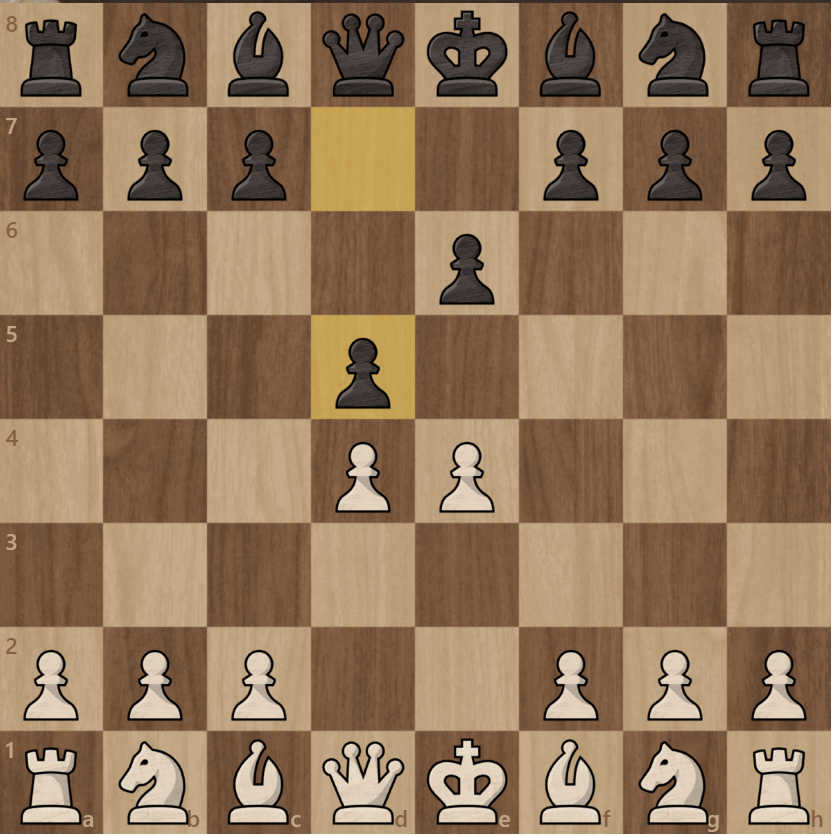
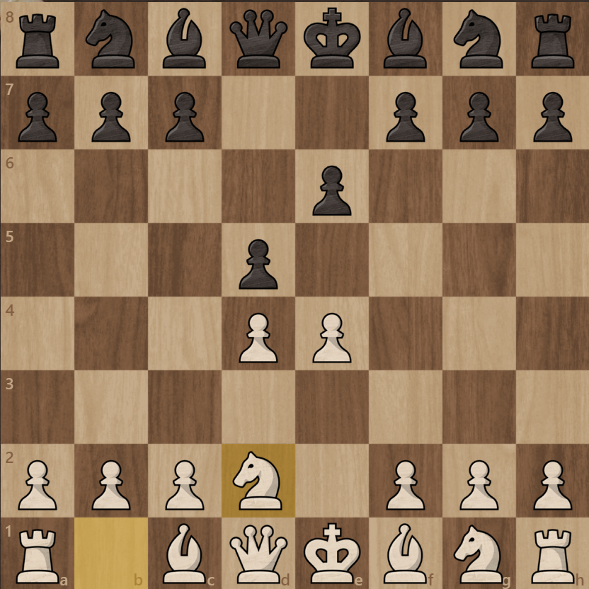
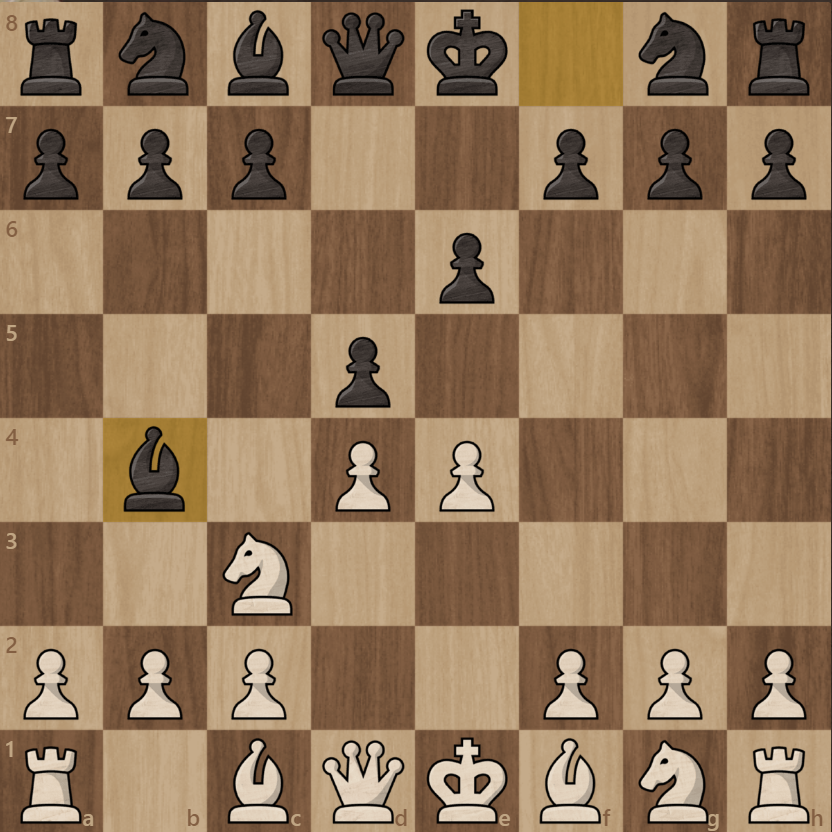
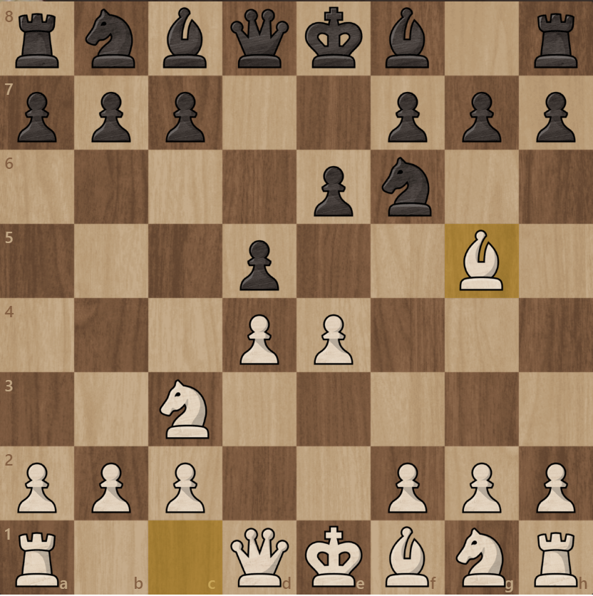
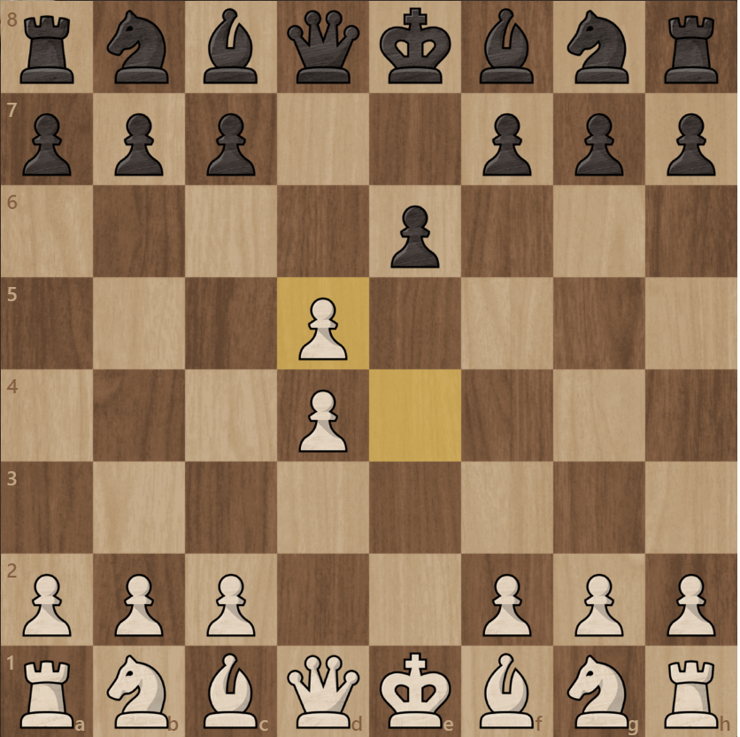
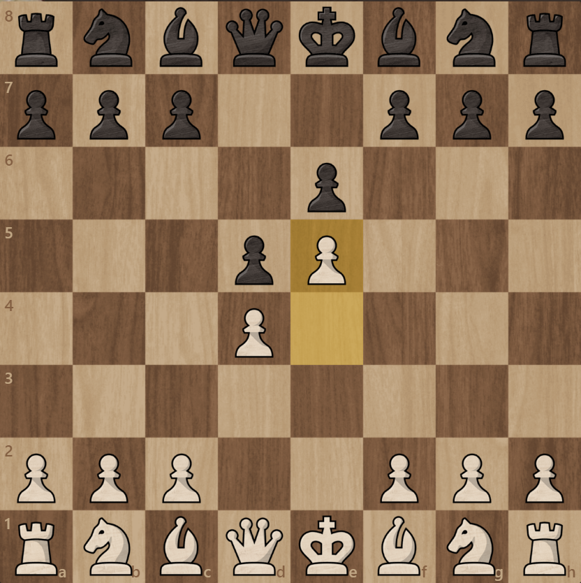

French Defense
French defense to jedna z najpopularniejszych odpowiedzi na 1.e4 i jest bardzo często grana także na najwyższym poziomie.
Początkowe ruchy w French defense to 1.e4 e6 2.d4 d5

Największy minus French Defense to że pionek na e6 blokuje białopolowego gońca.
French defense to bardzo solidne otwarcie jest dobrym wyborem dla graczy na wszelakich poziomach.
French Defense ma trzy wariacje:
Terrasch variation 3.Sd2

Winawer variation 3.Sc3 Gb4

Classical French 3.Sc3 Sf6 4.Gb5

Exchange variation 3.e5

Advanced variation 3.exd5
